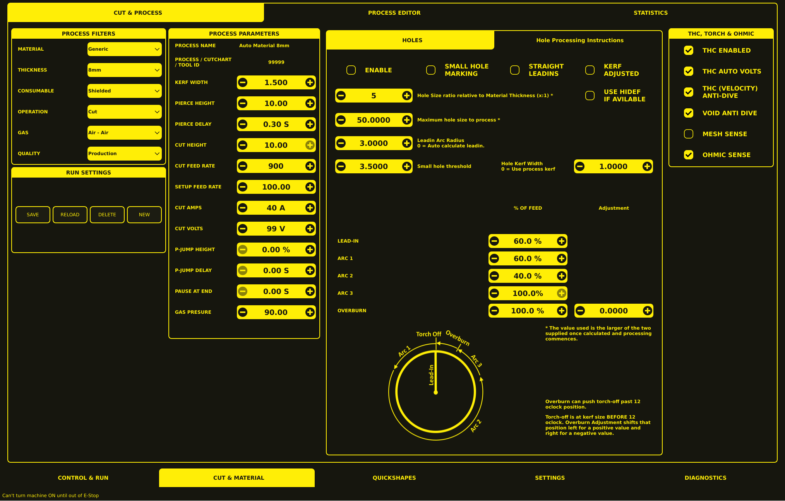

Parameters
The Parameters tab (on the CUT & MATERIAL section) manages cut parameters through a filter-based system backed by a SQLite database.

Layout Overview
The screen is divided into four main areas:
Process Filters & Run Settings — left column
Process Parameters — centre-left
Hole Processing — centre-right
THC, Torch & Ohmic — far right
Process Filters
The Process Filters panel contains six dropdown selectors used to narrow down the cut process database:
Filter |
Description |
Example Values |
|---|---|---|
Material |
Material type |
Generic |
Thickness |
Material thickness |
8mm |
Consumable |
Tip/wheel/Nozzle combination |
Shielded |
Operation |
Type of operation |
Cut |
Gas |
Cutting gas type |
Air - Air |
Quality |
Cut quality setting |
Production |
These selections define the displayed cutting-process configuration. The SUB-LIST below the filters shows all matching cut entries.
Run Settings
The Run Settings panel contains four action buttons for managing process records:
SAVE — Save changes to the currently selected cut.
RELOAD — Reload the selected cut from the database.
DELETE — Remove the selected cut from the database.
NEW — Create a new cut entry.
Process Parameters
The Process Parameters panel displays the selected process identity and its main cutting values.
Process Identification
Field |
Description |
|---|---|
Process Name |
Display name for the process |
Process / Cutchart / Tool ID |
Unique identifier for the process |
Editable Parameters
Each numeric field uses a minus / value / plus control for adjustment.
Parameter |
Description |
|---|---|
Kerf Width |
Width of the cut (used for path compensation) |
Pierce Height |
Distance from workpiece to torch at pierce |
Pierce Delay |
Time torch stays on at pierce height before lowering |
Cut Height |
Torch distance from workpiece during cutting |
Cut Feed Rate |
Cutting speed (mm/min or in/min) |
Setup Feed Rate |
Feed rate for setup / rapid movements |
Cut Amps |
Plasma current (requires RS485 communications) |
Cut Volts |
Expected arc voltage during cut |
P-Jump Height |
Piercing jump height (percentage) |
P-Jump Delay |
Piercing jump delay (seconds) |
Pause at End |
Pause time at end of cut (seconds) |
Gas Pressure |
Gas pressure setting |
Hole Processing
The Holes panel configures how circular holes are cut.
Hole Processing Options
Five checkboxes control hole-processing behaviour:
Enable — Enable hole processing for this process.
Small Hole Marking — Use marking (arc start) for small holes.
Straight Leadins — Use straight lead-in paths instead of arcs.
Kerf Adjusted — Adjust kerf for hole cutting.
Use Hidef if Available — Use high-definition consumables for holes if available.
Hole Size & Lead-in Values
Parameter |
Description |
|---|---|
Hole Size ratio |
Hole size relative to Material Thickness (x:1) |
Maximum hole size |
Maximum hole size to process with special handling |
Leadin Arc Radius |
Radius of the arc lead-in ( |
Small hole threshold |
Threshold below which small-hole processing is applied |
Hole Kerf Width |
Kerf width for holes ( |
Path Segment Feed Percentages
The % of Feed section lets you adjust cutting speed for different segments of a hole cut:
Path Segment |
% of Feed |
Adjustment |
Description |
|---|---|---|---|
Lead-in |
|
— |
Speed during the lead-in arc |
Arc 1 |
|
— |
Speed during the first arc segment |
Arc 2 |
|
— |
Speed during the second arc segment |
Arc 3 |
|
— |
Speed during the third arc segment |
Overburn |
|
|
Speed during overburn; Adjustment shifts torch-off position |
Note: The value used is the larger of the two supplied, once calculated and processing commences.
Overburn Explanation
Overburn can push torch-off past 12 o’clock position.
Torch-off is at kerf size BEFORE 12 o’clock. Overburn Adjustment shifts that position left for a positive value and right for a negative value.
THC, Torch & Ohmic
The THC, Torch & Ohmic panel configures torch-height-control and sensing options. Each setting is a checkbox:
Setting |
Description |
|---|---|
THC Enabled |
Enable torch-height control |
THC Auto Volts |
Auto-set THC voltage based on process |
THC (Velocity) Anti-Dive |
Prevent torch dive during arc initiation |
Void Anti Dive |
Anti-dive behaviour for void cuts |
Mesh Sense |
Enable mesh sensing (for uneven surfaces) |
Ohmic Sense |
Enable ohmic sensing for height detection |
Using the Parameters
Select filter values — Use the dropdowns in the Process Filters panel to select each field.
View matching cuts — The SUB-LIST below the filters shows all matching cut entries.
Select a cut — Click a row in the SUB-LIST to load its parameters.
Edit parameters — Modify values in the Process Parameters or Hole Processing panels.
Save changes — Click SAVE in the Run Settings panel.
Create a new cut — Click NEW, set all filter fields, enter the desired parameters, and click SAVE.
Delete a cut — Select the cut from the SUB-LIST and click DELETE.
Database
The process database is stored in plasma_table.db (SQLite format).
Seeding from CSV
A seed CSV file (master-seed-source.csv) is provided in the config directory. The database is automatically populated on first run if seed data exists.
Backup
cp plasma_table.db plasma_table.db.backup
Editing
sqlite3 plasma_table.db "SELECT * FROM cuts WHERE material = 'Mild Steel';"